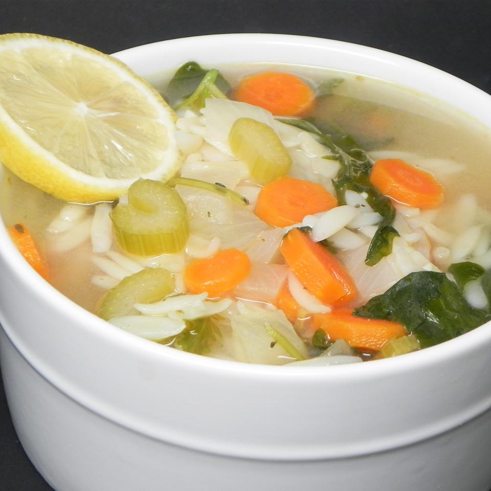

Lemon Chicken Orzo Soup
Description
Tender chicken in a lemony broth with orzo pasta, carrots, onions, celery, and baby spinach.

Cooking Information
- Prep: 20mins
- Cook: 1 hr
- Total: 1 hr 20mins
- Servings: 12
- Yield: 6 quarts
Nutrition Facts
Per Serving: 167 calories; protein 12.1g; carbohydrates 21.7g; fat 4.1g; cholesterol 20mg; sodium 186.9mg.
Ingredients
- 8 ounces orzo pasta
- 1 teaspoon olive oil
- 3 medium carrots, chopped, or more to taste
- 3 ribs celery, chopped
- 1 medium onion, chopped
- 2 cloves garlic, minced
- 1/2 teaspoon dried thyme
- 1/2 teaspoon dried oregano
- salt and ground black pepper to taste
- 1 bay leaf
- 3 (32 ounce) cartons fat-free, low-sodium chicken broth
- 1/2 cup fresh lemon juice
- 1 lemon, zested
- 8 ounces cooked chicken breast, chopped
- 1 (8 ounce) package baby spinach leaves
- 1 lemon, sliced for garnish (Optional)
- 1/4 cup grated Permesaon cheese (Optional)
Directions
- Step 1
- Bring a large pot of lightly salted water to a boil. Cook orzo in the boiling water until partially cooked through but not yet soft, about 5 minutes; drain and rinse with cold water until cooled completely.
- Step 2
- Heat olive oil in a large pot over medium heat. Cook and stir carrots, celery, and onion in hot oil until the vegetables begin to soften and the onion becomes translucent, 5 to 7 minutes. Add garlic; cook and stir until fragrant, about 1 minute more. Season mixture with thyme, oregano, salt, black pepper, and bay leaf; continue cooking another 30 seconds before pouring chicken broth into the pot.
- Step 3
- Bring the broth to a boil. Partially cover the pot, reduce heat to medium-low, and simmer until the vegetables are just tender, about 10 minutes.
- Step 4
- Stir orzo, lemon juice, and lemon zest into the broth; add chicken. Cook until the chicken and orzo are heated through, about 5 minutes. Add baby spinach; cook until the spinach wilts into the broth and the orzo is tender, 2 to 3 minutes. Ladle soup into bowls; garnish with lemon slices and Parmesan cheese.